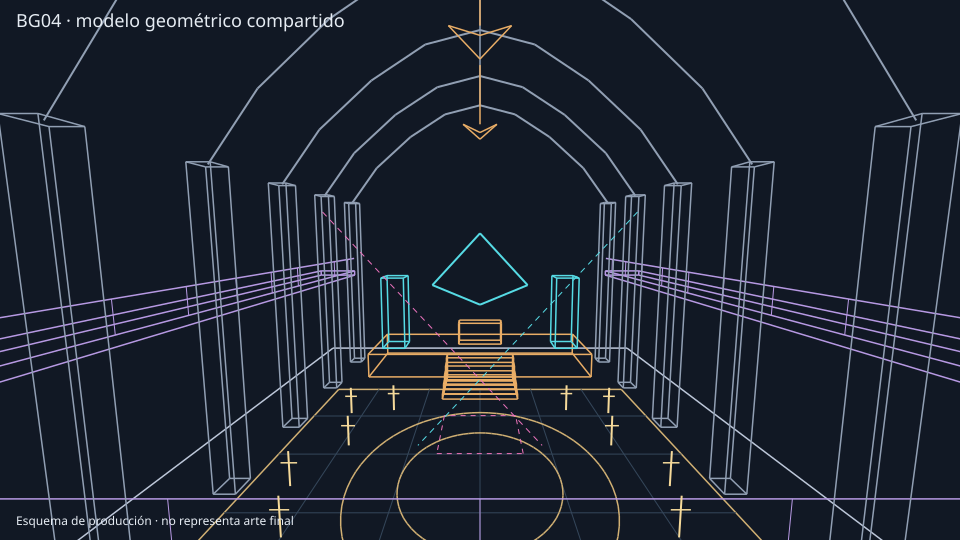
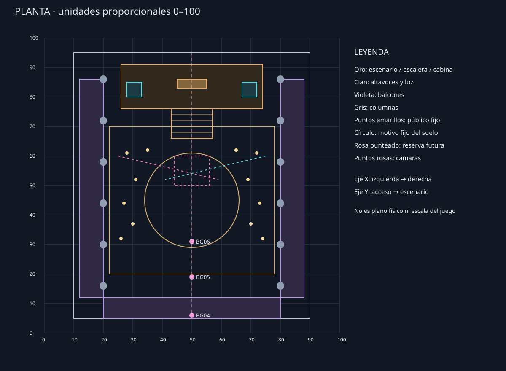
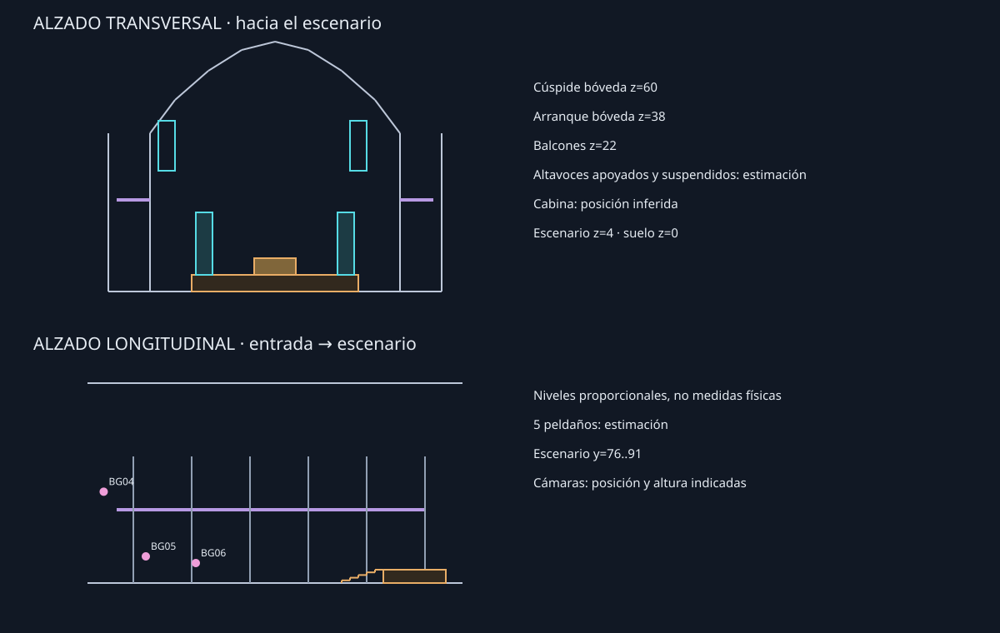
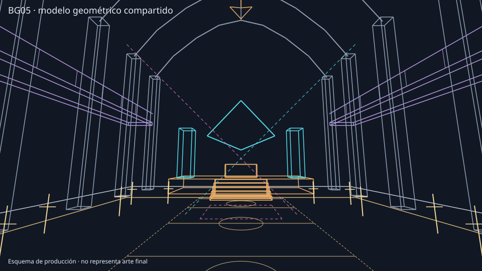
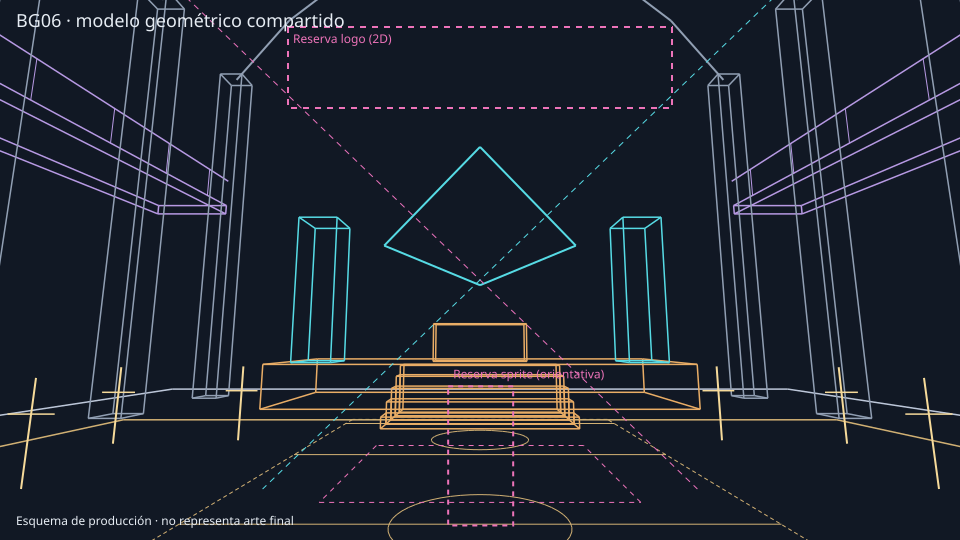

La imagen base permanece intacta. Las marcas son anotaciones gráficas y no indican coordenadas 3D medidas. El modelo es una estimación, no reproduce exactamente la imagen.
BG04: elementos identificados
Pista, límites parcialmente ocultos.
Suelo longitudinal.
Escenario elevado.
Escaleras.
Altavoces junto a escenario.
Posible cabina: no se distingue.
Balcones laterales.
Columnas.
Público.
Bóvedas.
Luminaria.
Altavoces suspendidos.
Barandilla de primer plano.
Proyección frente a la referencia

BG04 · proyección calibrada de alambreBG04 original sin deformación
Persisten diferencias en el eje del escenario, el horizonte, los altavoces y la perspectiva. El modelo dibuja líneas sin superficies ni oclusión.
Planta revisada y plano anterior
Planta revisada: franja de suelo estimada y altavoces suspendidos.

Planta 08C.2 anterior, conservada.
La reserva rosa no constituye una plataforma funcional. El nuevo patrón es una aproximación: detalles del suelo quedan ocultos.
Alzados revisados

Alturas proporcionales de trabajo, sin pretensión de escala física.
Proyección BG05 desde el mismo modelo

Modelo común · BG05Arte previo 08C.1, sin adaptar al nuevo modelo.
Proyección BG06 desde el mismo modelo

Modelo común · BG06; reservas orientativas, no sprites.Arte previo 08C.1, sin adaptar al nuevo modelo.